Change Requests
How a CBO/FCCN vendor requests a change to a currently-enrolled child's placement — a different seat type, a different class, aging up from Infant to Toddler, or ending the placement entirely — and how DOE reviews and approves that request through the same Enrollment Change Request mechanism for all four.
Overview
A Change Request is how a CBO/FCCN vendor asks DOE to update something about a currently-enrolled child's placement, without having to re-enroll them from scratch. It's initiated by the vendor — usually the Enrollment Manager — from the child's active or approved Enrollment record, through the same Enrollment Change Request wizard for all four scenarios this guide covers:
- Change Seat Type — e.g. moving a student from an SDY seat to an EDY seat.
- Change Class — moving a student to a different class/classroom.
- Change Program Type — aging up from Infant to Toddler, once the child is past the vendor-specific age threshold.
- Discharge Request — formally ending the placement (the child ages out of the program, the family moves away, or a parent decides to stop).
A DOE Enrollment Specialist reviews and approves every type of request before the change actually takes effect on the enrollment.
Steps
1Open the enrollment to change
DO In the vendor portal, go to Student Enrollments and locate the child whose enrollment needs a change. This example uses Camila Vasquez, an actively enrolled child at Cedar Point – Riverdale Campus.
RESULT The Enrollments list shows every child currently enrolled at the sites this vendor user has access to, each linked through to its enrollment record.
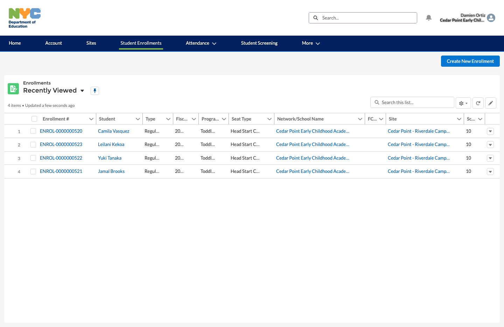
2Review the active enrollment
DO Click into the enrollment record. Confirm it's the right child and that its lifecycle status bar currently shows Active (or Approved) — a Change Request is only available from those two statuses.
RESULT The enrollment detail page loads with its full lifecycle status bar, student and parent/guardian information, and related lists for attendance, approval history, and enrollment change requests.
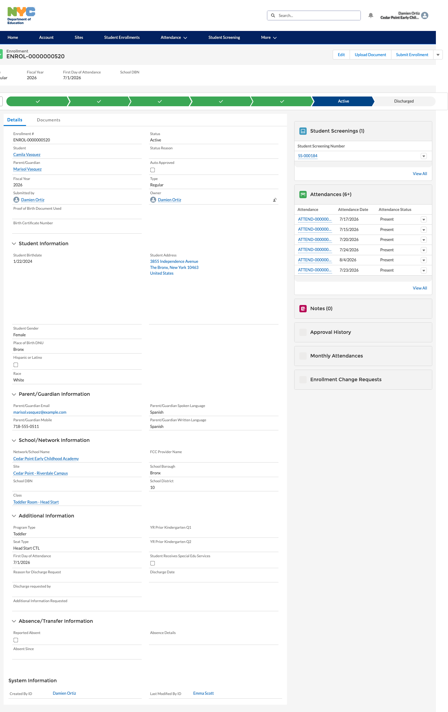
3Start an Enrollment Change Request
DO Click Show more actions on the enrollment, then choose Enrollment Change Request from the dropdown.
RESULT An "Enrollment Change Request" wizard opens as a modal, ready to select what kind of change is being requested.
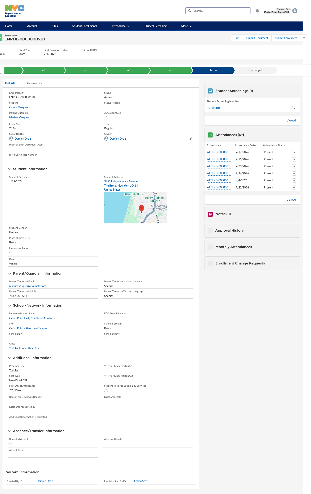
4Choose the type of change
DO On the first wizard screen, review the enrollment's current Class, Program Type, Seat Type, and First Day of Attendance, then select the type of change being requested.
RESULT The wizard offers up to four change types: Discharge Request, Change Seat Type, Change Class, and Change Program Type.
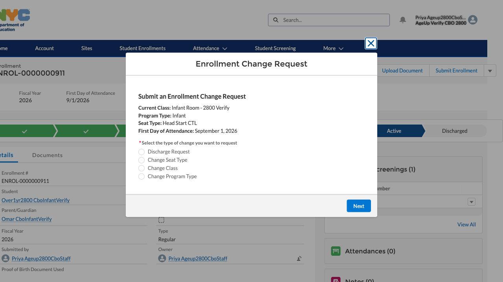
5Change Seat Type
DO Select Change Seat Type and click Next.
RESULT A "Change Seat Type — Step 1 of 2" screen opens, carrying forward the enrollment's Current Class, Program Type, Current Seat Type, and First Day of Attendance, with a New Seat Type picklist to choose from (e.g. moving a student from an SDY seat to an EDY seat).
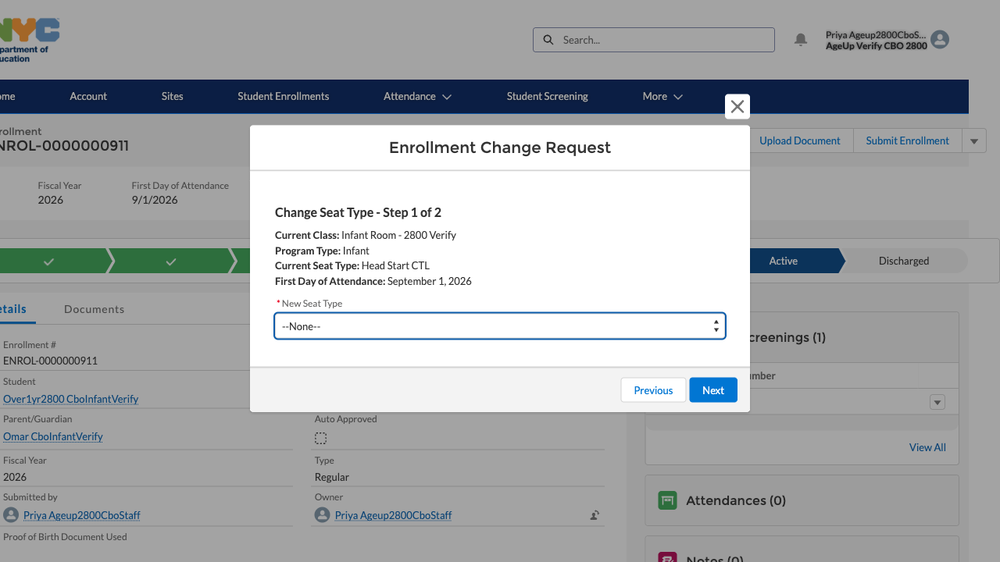
6Change Class
DO Select Change Class and click Next.
RESULT A "Change Class" screen opens with the same current-enrollment context, plus a New Class picklist, a required Effective Date, and an optional Comments box.
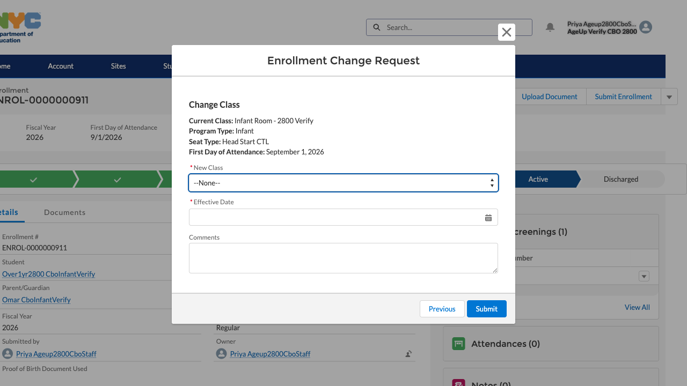
7Change Program Type
DO Select Change Program Type and click Next, on an Infant-program enrollment whose child has aged past the 1st (CBO/GFDC) or 2nd (FCC) birthday threshold.
RESULT The wizard auto-detects the eligible transition — "Changing Program Type from: Infant to: Toddler" — and asks for a New Toddler Class, an Effective Date, and optional Comments.
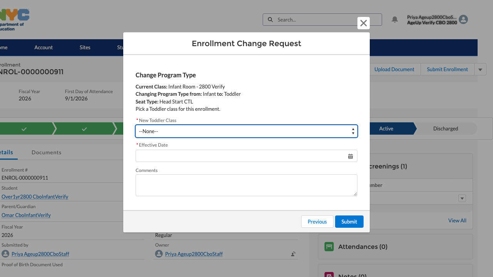
DO Try the same option on an Infant enrollment whose child is still under that age threshold.
RESULT Instead of a class picker, the wizard immediately blocks with "Program Type Change Not Allowed — This student is not currently eligible to change from Infant to Toddler for the vendor type associated with this enrollment."
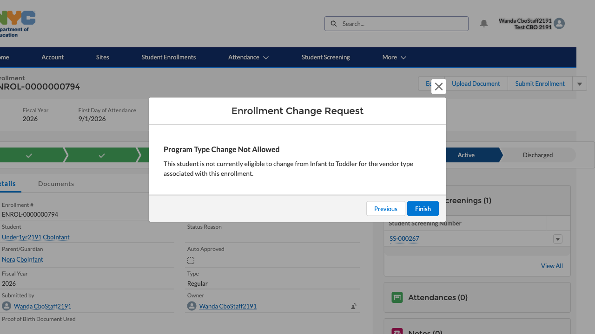
8Discharge Request
DO Select Discharge Request and click Next, when the child is leaving the program entirely (aging out, moving away, or a parent deciding to stop).
RESULT The wizard advances to the discharge-specific details screen, carrying forward the enrollment's current class, program type, seat type, and first day of attendance for context.
DO Confirm the child is no longer attending the site, then fill in the required Discharge Date, upload the Parental Letter of Release under Upload Files, choose a Reason for Discharge (e.g. Parent Request), and add any Comments. Do not click Submit unless you intend to actually file the request.
RESULT The form confirms the discharge complies with the Division's policy on student discharges and chronic absenteeism, and warns that once discharged, the child will no longer appear on the site's attendance roster after the effective discharge date.
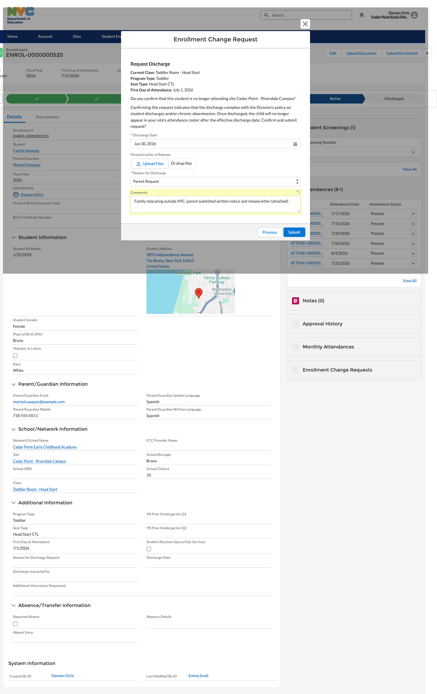
9DOE reviews the submitted request
DO Once the vendor submits any of the four request types, it lands with a DOE Enrollment Specialist for review. Internally, they open the Enrollment Change Request record to check its Record Type (Discharge Request, Seat Type Change, Class Change, or Program Type Change), Status, linked Enrollment, and the old/new values being requested.
RESULT The record shows Status: Submitted, awaiting DOE action, linked back to its Enrollment — the same pattern regardless of which of the four Record Types it is. Here's a Seat Type Change example alongside the Discharge one, to show they're genuinely the same mechanism: Old Seat Type SDY, New Seat Type EDY.
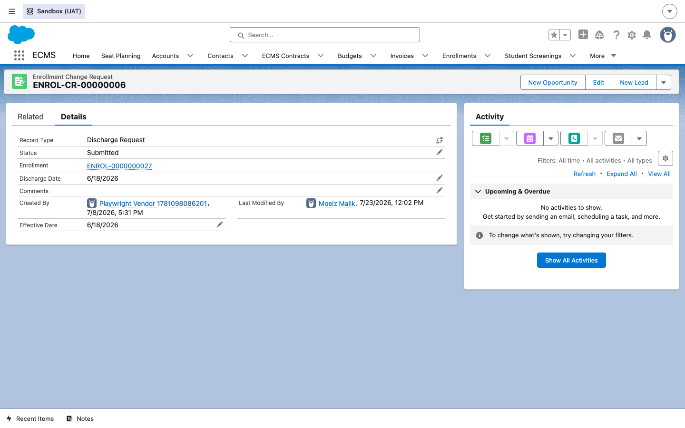
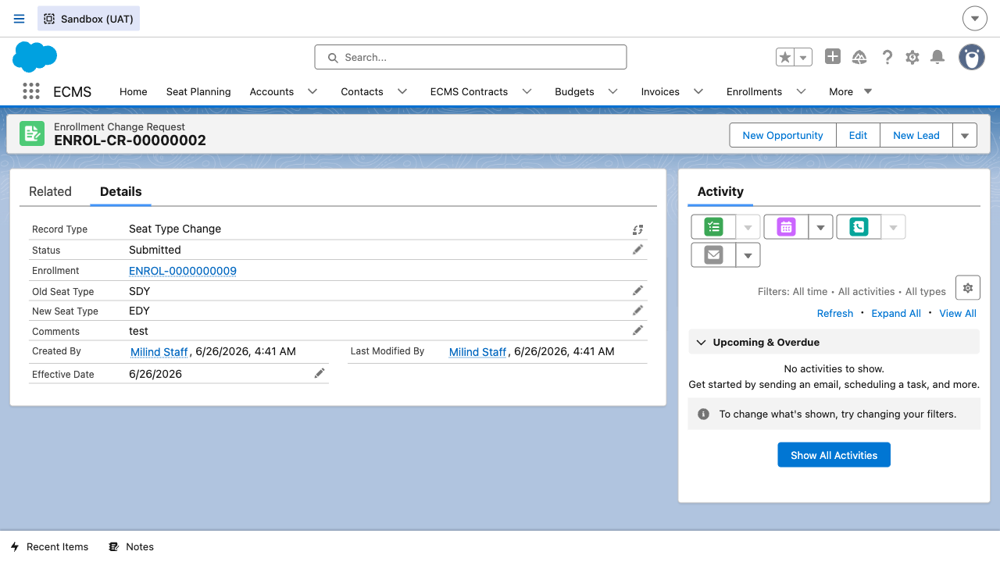
10DOE approves the change
DO After confirming the request is in order (paperwork and dates for a Discharge; capacity on the new Class/Seat Type for the other three), the DOE Enrollment Specialist approves the request.
RESULT The Enrollment Change Request record's Status moves to Approved — a fully processed, closed-out example of the same record type.
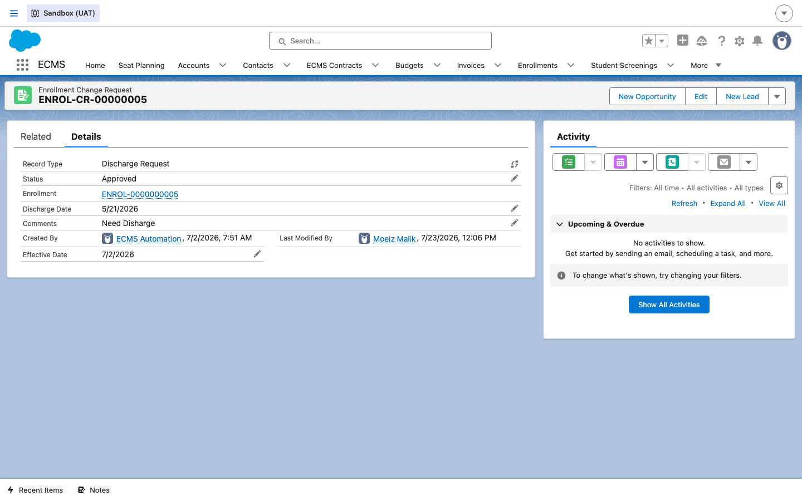
11Confirm the result on the Enrollment
DO Once approved, open the underlying Enrollment record and check its lifecycle status bar and Key Fields.
RESULT For a Discharge Request, the status bar now shows Discharged as the current stage, with the Discharge Date and Status Reason populated in Key Fields. For a Seat Type, Class, or Program Type change, the enrollment's lifecycle stage doesn't move — it stays Active/Approved, with just the relevant field (Seat Type, Class, or Program Type) updated to the new value as of the request's Effective Date.
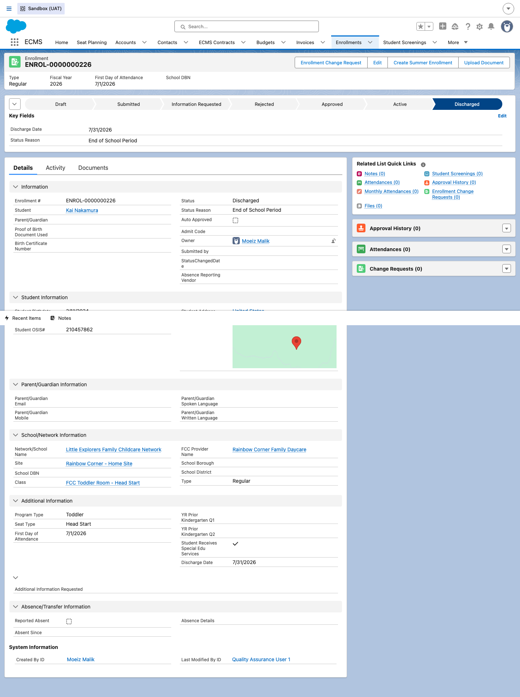
A Discharge closes out the enrollment lifecycle for this child — if the family re-enrolls at a later date, a brand-new Enrollment record is created rather than reopening this one. The other three request types simply update the existing, still-active enrollment in place.